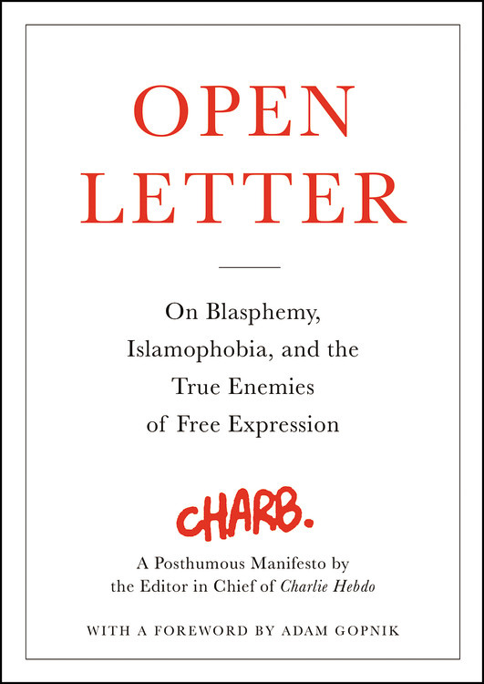
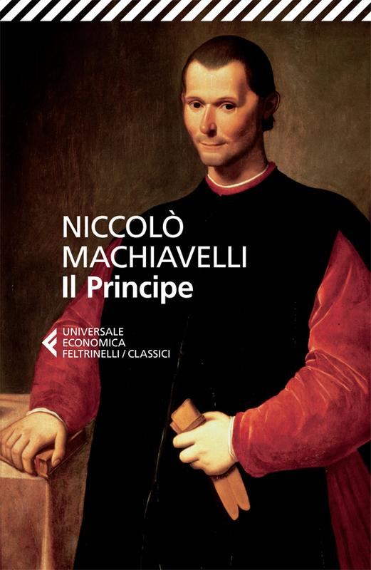
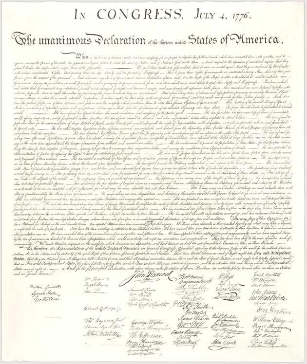
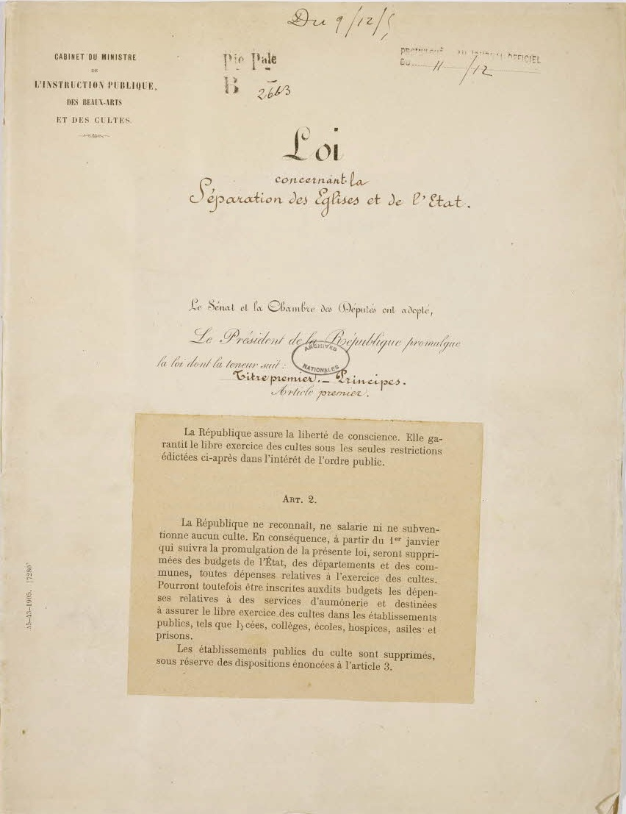

1:14:55 · 10 OPERE
La lettera aperta di Stéphane Charbonnier. Da Charlie Hebdo all'attentato a Michael Stürzenberger.
Il filo del discorso
Dr Divago legge e commenta la lettera aperta postuma di Charb per collegare la difesa della libertà di espressione all’attacco di Mannheim del 31 maggio 2024. La prima parte è una polemica sul linguaggio dei media e sul consenso: titoli giornalistici, paura del potere e scelta delle parole sono interpretati come strumenti di orientamento del pubblico.
Leggi la sintesi completaRiduci la sintesi
Il libro di Charb porta al centro il rapporto fra critica delle religioni, lotta al razzismo e uso del termine islamofobia. Il relatore discute poi ateismo, etica laica e tradizione religiosa, richiamando Jefferson, Schweitzer e Ippocrate. Le immagini di Platone e l’esempio di una previsione fisica sostengono il suo appello al ragionamento. La scheda distingue queste interpretazioni dai dati verificati: chiarisce date e ruoli delle vittime, la cronologia della pubblicazione e l’eccezione di Alsazia-Mosella alla legge 1905. La successiva ricostruzione giudiziaria del 2025 è esplicitamente separata dal contesto della registrazione. Accuse ai media, equivalenze fra conflitti e giudizi su religioni o movimenti restano attribuiti, senza estendere responsabilità criminali a intere popolazioni o comunità di fedeli.
I libri nel discorso

Lettre aux escrocs de l’islamophobie qui font le jeu des racistes / Open Letter: On Blasphemy, Islamophobia, and the True Enemies of Free Expression
Note sul riferimento
Copertina: Little, Brown and Company ·5 gennaio 2016 · ISBN 9780316311335 · prefazione di Adam Gopnik
Copertina autentica inglese con titolo, sottotitolo, Charb e prefazione di Adam Gopnik. La lingua inglese è dichiarata nel video, ma non si afferma di avere verificato visivamente la copia o il suo ISBN. La prefazione non è una seconda opera citata e Gopnik non sostituisce Charb come autore.
Charbonnier/Charb e libro presentati dall’inizio; titoli inglese e francese pronunciati a 2322–2367s. L’edizione inglese è dichiarata e vari passaggi sono letti/commentati. Originale francese e traduzione inglese non sono duplicati.

Gli strumenti del comunicare (Understanding Media)
Identificazione probabile
Note sul riferimento
Copertina: Il Saggiatore, 2023, traduzione di Ettore Capriolo; opera originale del 1964.
Immagine autentica dell’opera, controllata visivamente; l’edizione di riferimento non è attribuita al filmato.
Il mezzo è il messaggio richiamato come formula, senza autore o libro pronunciati: collegamento probabile a Understanding Media, non assegnato al diverso The Medium Is the Massage.

Corano
Note sul riferimento
Copertina: BUR Classici, edizione aggiornata
Edizione con introduzione, traduzione e commento di Alessandro Bausani, a cura di Layla Mustapha Ammar. Anno della ristampa non dedotto dalla copertina; nessuna edizione attribuita al video.
Il Corano è nominato e vengono discussi in generale passi religiosi esposti nelle manifestazioni. I successivi richiami alla gola non permettono di fissare con certezza un versetto o una traduzione.

Il Principe
Identificazione probabile
Note sul riferimento
Copertina: Feltrinelli · 2013 · a cura di Ugo Dotti
Immagine autentica dell’opera, controllata visivamente; l’edizione di riferimento non è attribuita al filmato.
Machiavelli e la domanda se essere amati o temuti riconoscibili; collegamento probabile al capitolo XVII del Principe, titolo non pronunciato.

Iliade
Note sul riferimento
Copertina: Einaudi · ET Classici · 2014
Copertina autentica dell’edizione di riferimento, controllata visivamente. Non identifica l’esemplare letto o citato nel video.
Omero e Monti nominati con la formula sugli infiniti lutti: riferimento riconoscibile al proemio dell’Iliade, non prova dell’edizione fisica usata.

La Repubblica
Identificazione probabile
Note sul riferimento
Copertina: Laterza · La Repubblica · edizione con testo a fronte di riferimento
Immagine associata all’ISBN di riferimento e controllata visivamente; edizione e traduzione non identificate come quelle citate o lette nel video.
Platone e la caverna con gli sguardi fissi alla parete: collegamento probabile al libro VII della Repubblica. Titolo non pronunciato.

Dichiarazione d’indipendenza degli Stati Uniti d’America
Identificazione probabile
Note sul riferimento
Facsimile: incisione di Stone del 1823: Documento del 4 luglio 1776 · incisione di William J. Stone del 1823
Riproduzione documentaria dell’incisione di Stone del 1823 conservata dai National Archives. Non è la pergamena originale del 1776, né la copertina di un libro.
Jefferson e self-evident truths espliciti: rimando testuale riconoscibile alla Dichiarazione d’indipendenza; nessuna biografia aggiunta.

Giuramento di Ippocrate (Hórkos)
Note sul riferimento
Copertina: Ippocrate · Opera omnia · Francoforte, eredi di Andreas Wechel,1595 · pagina del Giuramento in greco e latino
Pagina originale intera del Giuramento, con titolo Hórkos/Hippocratis Iusiurandum e colonne greca e latina. Provenienza NLM 2251068R. Illustra il testo in una raccolta antica, non una copertina autonoma né un’edizione identificata nel video. Non è la sol’immagine di un busto di Ippocrate.
Giuramento di Ippocrate esplicitamente nominato. Primum non nocere è la formula che il relatore vi associa, non una citazione letterale attestata nel testo antico.

Bibbia
Note sul riferimento
Copertina: San Paolo, 2014 · Nuova Versione dai Testi Antichi · edizione di riferimento
Levitico e Gesù nominati nel discorso sulla reciprocità. Richiamo generale ai testi biblici; nessun versetto o traduzione fissati arbitrariamente. Hillel resta distinto dal testo biblico.

Loi du 9 décembre 1905 concernant la séparation des Églises et de l’État
Note sul riferimento
Prima pagina della legge · Archives nationales, AE/II/2991: Prima pagina originale della Loi concernant la séparation des Églises et de l’État, 9 dicembre 1905. Archives nationales, AE/II/2991; riproduzione pubblicata sul sito istituzionale nella commemorazione 2025. Non è una copertina libraria né una pagina del Journal officiel.
Titolo, data manoscritta e articoli 1–2 leggibili. Non identifica la particolare riproduzione consultata dal relatore e non rappresenta l’intero cahier.
Nel passaggio: legge del 1905 e separazione fra Stato e Chiesa esplicite; titolo completo e giorno 9 dicembre riscontrati nel documento istituzionale. Il relatore la riferisce tramite Charb, senza lettura integrale dell’atto e con sovrapposizione al regime locale alsaziano.
Fonti e approfondimenti (14)
- Polizia di Mannheim e procura · comunicato originale del 2 giugno 2024 sul decesso dell’agente ↗
- OLG Stuttgart · ricostruzione giudiziaria e sentenza del 16 settembre 2025, allora non definitiva ↗
- Ministero francese della Cultura · commemorazione 2025, dodici morti di cui otto della redazione ↗
- Governo francese · vittime del 7 gennaio e distinto totale dei tre attentati di gennaio 2015 ↗
- Conseil constitutionnel · decisione 2012-297QPC del 21 febbraio 2013, mancata applicazione della legge 1905 in Alsazia-Mosella ↗
- NLM · testo originale del Giuramento e distinzione da First, do no harm ↗
- BKA · statistica criminale originale 2023, categorie degli attacchi con coltello ↗
- ONU · risoluzione 67/19 del 29 novembre 2012 e status della Palestina ↗
- Ricerca originale su Alain Quellien, con verifica dell’uso diislamophobie nel 1910 ↗
- Pew Research Center · ricerca demografica originale 2017 con stime 2007/2011/2017 ↗
- Senato USA · documenti originali del Permanent Subcommittee on Investigations e ruolo di Roy Cohn ↗
- EMA · cronologia delle autorizzazioni di Comirnaty e della sorveglianza ↗
- Organizzatore del festival · presentazione diretta dell’autrice Sigolène Vinson ↗
- sefaria.org ↗